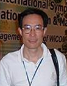

李元
职位：信工院院长
教授。曾任南京大学电子科学与技术系党委书记、副系主任,意大利国际物理中心(ICPT)访问学者。 研究方向:
数字电子技术、薄膜与图形技术
数字电子技术、薄膜与图形技术
何菁
职位：信工院副院长
副教授。现任通信工程系系主任，南京大学智慧城市研究院 副院长。主要研究嵌入式系统设计与开发，短距无线通信技术，移动通信技术和设备等。
黄润生
职位：实验室主任
南京大学教授，博士生导师，技术物理研究中心主任；金陵学院信工院机器人实验室主任、机电与自动化综合实验室主任。
叶保留
职位：计算机系系主任
博士、副教授。现任中国计算机学会理事、开放系统专委会秘书长。主要研究兴趣包括无线网络、P2P计算、流媒体服务。

袁杰
职位：电子系系主任
理学博士，南京大学电子科学与工程学院院长助理、金陵学院电子科学与工程系主任,副教授,硕士研究生导师，曾留学于美国密西根大学。

朱庆华
职位：信管系系主任
教授、博士生导师，南京大学信息管理学院信息管理科学系主任、南京大学金陵学院信息科学与工程学院信息管理专业主任。